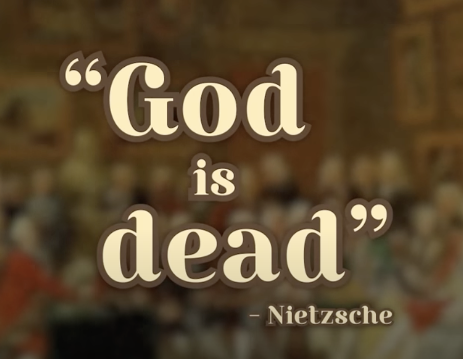
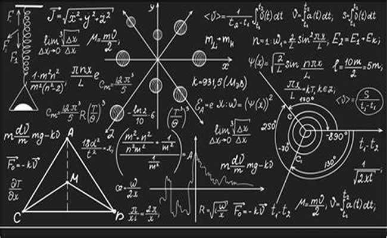
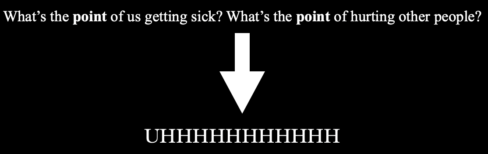
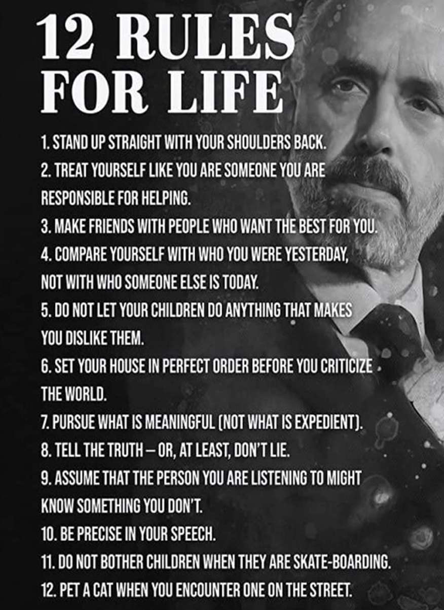
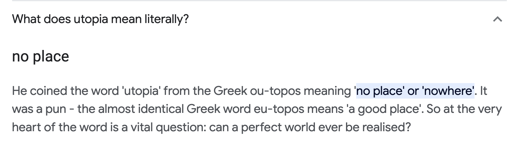
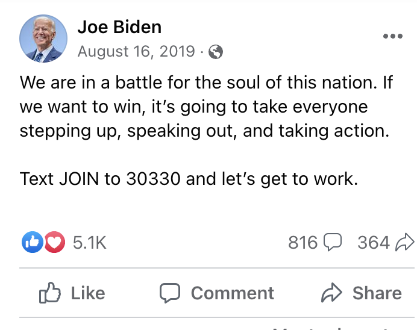
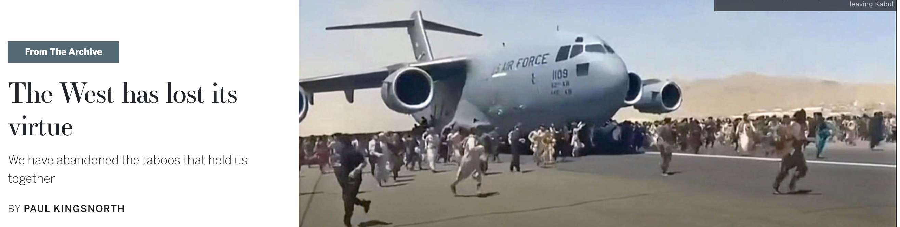
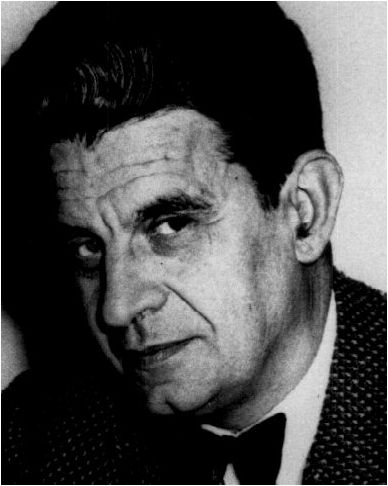

Do you believe in ghosts?
"God is dead." instead of trusting a God to tell us why we are sick and why we sometimes hurt other people, we have medicine to explain how viruses travel and psychology to explore the inner workings of our minds and emotions.
 
"Yay, free from the shackles of Dogma!"
"There has never been a greater deed; and whoever is born after us -- for the sake of this deed he will belong to a higher history than all history hitherto."
"But at the same time: 'What after all are these churches now if they are not the tombs and sepulchers of God?'"

Secularism left us with a major problem. Science could tell us why we were sick and why we sometimes hurt other people, but it couldn't really tell us why, like: what’s the point of us getting sick, what’s the point of hurting other people?
And yet, God no longer exists. Churches become monuments, sepulchers of God. Whom do we go to explain the "why" when we find out that time and space are actually relative, that we can never observe electrons as they change under lights? And yet, we outsource ourselves to: a belief, an imagery, a symbol, a book (12 Rules for Life???) — A ghost.

It may be that these ghosts live as the dead Tiresias return from the underworld to offer Odysseus the path home, or perhaps they are, on the other hand, like old Hamlet, who would not rest until he was avenged.
What is a ghost? We define ghosts as those not yet dead, not fully alive specters that are haunting. And whether or not you believe in hauntings: they are everywhere.
Richie is a ghost. He haunts Pop: reminding Pop as a symbol of the past injustices that continue to shape the lives of the characters in the present. Pop has never fully come to terms with his death but is deeply affected by the memories of Richie. Like so many other young black men in the South, Richie's death reveals the systemic racism and violence that defined the region for so long: the history of Parchman as a racially oppressed forced labor camp. Richie's ghostly presence is a haunting reminder that the past is never truly gone but lingers on in the memories and experiences of those who have lived through it.
Given is a ghost. He haunts Mam:
“A year after Given died, Mama planted a tree for him. One every anniversary, she said, pain cracking her voice. If I live long enough, going to be a forest here, she said, a whispering forest. Talking about the wind and pollen and beetle rot. She stopped and put the tree in the earth and started beating the soil around the roots. …[Mam] started to cry then. And I know [Given] is there. Right on the other side of that veil. She knelt like that until her tears stopped running, and she sat up and wiped her face and smeared blood and dirt all over it.”
Given’s murder was not an isolated incident but a part of a larger pattern of racial violence in the United States for centuries. Like Richie, Given's story serves as a reminder of the systemic racism and violence Black people have faced throughout history: a reflection of the ongoing impact of racism and violence on black communities in the South.
Richie's story also brings to the forefront the ongoing struggles for justice and equality that continue to define the region, as well as the wider struggle for social justice in America.
But Given also haunted the uncle and the cousin of Micheal.
"He shot [Given]
the nigger. This fucking hothead shot [Given]the niggerfor beating him. … What we going to do? Michael’s mama told them to call the police. Big Joseph ignored her and all of them went back up into the woods, an hour in, and found Given lying long and still in the pine needles, his blood a black puddle beneath him. Beer cans all around him from the boys throwing them and running once the cousin with the bad eye aimed and fired, once the shot rang out. How they scattered like roaches in the light. The uncle had slapped his son across the face, once and twice. You fucking idiot, he’d said. This ain’t the old days. And then his cousin had put his arms up and mumbled: He was supposed to lose, Pa.""
Given is thus, to them, haunted. Because he compares and brings them back to the ‘good old days’ even if it's a state that we never were in or had — the nostalgic dreams of utopia: an innocent coherence before everything got so confusing.

People hold utopia in their hearts; it haunts them: even our own pasts our childhoods, they haunt us as the good old days or a former source of unity, meaning, and innocence.

they'll say: we’ve lost ‘real men’ we've lost our value, we must fight for the soul of our country, we’d make America great again. Western civilization itself stands to be lost and is purity adulterated.
Given continues to haunt while the contradictions he represents remain: inequality, oppression, racism, alienation.

Omg the world is bad, and we are all haunted. And let's say in order to deal we all this anxiety; you started to dedicate a huge portion of your life to playing trumpet. You refer to yourself as a trumpeter. You turn your house into a theatre, and every day, you just sit there and play trumpet, ignoring your annoyed and probably angry neighbors and you would say, “Man, if, for whatever reason, I couldn’t play trumpet anymore—who am I at that point? I’m a trumpet player; I’d be nothing. That’s who I am. I’d most likely just jump out of the building.”
And now, a couple of years later, let's say you are playing trumpet walking out of your favorite restaurant and step on a wine cork and the cork flies and hits a waiter with a pot of hot Shakshuka, and that makes him lose his balance and thrown the whole pot of hot Shakshuka to the coming BMW, hit right on the front window and the driver was on his phone not paying attention and petrified by this red disgusting mess on his window, pull the steering wheel to the right and crush right on to your arms and your trumpet, mangled beyond repair. And you cannot ever play trumpet again. How would you feel at that moment? Sad, raged? (‘The stupid driver,’ you may say) empty? But the emptiness you're experiencing was always there; you'd just been diverting your attention away from the work of being true to yourself by attaching yourself to this external activity and making it who you are.
You were alienated: you are a ghost.
Outsourcing who we are as individuals: our beliefs, priorities, and everything that makes us unique is a really beguiling concept. But if we outsource it to things like trumpet playing, hokey, or being in a relationship, a parent, isn't that not you? You might be utilizing those things to avoid the process, to avoid the agony of this state of hopelessness.
In this sense: Leonie is a ghost.
“All you hear, all you see, is him,” Mama said. “Every time you say something, you look at him like a little puppy dog. Like you waiting for him to pet you.”
Leonie sees Michael as her ticket out of the small, rural Mississippi town she grew up in and as a way to escape her past and the racial history that comes with it. She sees him as a symbol of a life different from her own, free from the constraints of poverty and racism.
“He (Michael) saw me. Saw past skin the color of unmilked coffee, eyes black, lips the color of plums, and saw me. Saw the walking wound I was, and came to be my balm.”
By being with Michael, Leonie is attempting to outsource herself to become someone else entirely, someone who is not tied to the history and limitations of her own identity.
“The way we were sitting on that sofa, knees tight, backs curved, heads low, made me think of mirrors and of how I’d wanted to be a different kind of woman, how I’d wanted to move somewhere far away, go west to California”
Leonie longs to be a different kind of woman, to move away.
But when she
“thought of Michael, of how happy he would be, of how I (Leonie) would have a piece of him with me always, and that unease melted like lard in a cast-iron pot.”
She alienated herself and chose Micheal's wish above hers.
Why so many ghosts?
We use an Imaginary and Symbolic as screens that structure our psychic life in a manageable way
The Imaginary and the Symbolic shape how we imagine ourselves and other people and how we codify our position and activity in the world: What's worth doing? What's not worth doing?
As soon as the subject comes to be, he owes it to a certain non-being on which he raises his being. And if he isn’t, if he isn’t something, he obviously bears witness to some kind of absence, but he will always remain purveyor of this absence, I mean that he will bear the burden of its proof for lack of being capable of proving the presence. (Lacan, 1993, p.192)
We’re not complete but open subjects without coherent identities. And “man” too is a fixed, universal, and essential concept that is not a natural or timeless truth but rather a historically constructed notion.
Almost all the time, the way we narrate ourselves to ourselves is wandering around (up here): Imaginary and Symbolic: think: I m a (trumpet player, lawyer, doctor, fill in the blank.)
So to rupture our reality, what we only need are traumatic events —events that cause the meaning of the world to temporarily fall apart: accident, death, brutal violence, and perhaps, in a more positive or "sublime" dimension, psychedelic trips where you sort of dissolve the boundaries between yourself and the rest of the world.
The events that people try to explain to others – explaining how they feel – make no sense, no matter how understanding that other person tries to be. And they cause the rest of the world to make no sense to you and may return as symptoms in behaviors that you don't have control over later on.
For example, Leonie sees Given only when she is high; Leonie and Micheal “feel likes they are back like before when they are high; Micheal starts using drugs after the oil spill happened; Leonie begins using drugs often; every other day, after Micheal goes to jail.
She says,
“I’d spent the days after the accident with Jojo in the house watching CNN, watching the oil gush into the ocean, and feeling guilty because that’s not what I wanted to see, guilty because I didn’t give a shit about those fucking pelicans, guilty because I just wanted to see Michael’s face, his shoulders, his fingers, guilty because all I cared about was him. He’d called me not long after the story broke on the news, told me he was safe, but his voice was tiny, corroded by static, unreal. I knew those men—all eleven of them. Lived with them, he said. When he came home, I was happy. He wasn’t. What we supposed to do? he asked, taking two bites of his grits before leaving them to jelly on his plate. We’ll figure it out, I said. When he started getting skinny, I thought it was because of his nightmares. When his cheekbones started standing out on his face like rocks under water, I thought it was because he was stressed out over money. When his spine rose under his skin, a line of knuckles punching up his back, I thought it was because of his grief and the fact he couldn’t find another welding job anywhere in Mississippi or Alabama or Florida or Louisiana or the Gulf of Mexico. But later I found out the truth. Later, I learned he’d figured everything out without me.”
What it means to be a ghost is that you've lost something of yourself, not fully present, which is why you run around in life trying to fill it with relationships, career, fulfillment, or whatever else.
But what you're trying to get back, paradoxically, is something that you never had (a good mother, a good wife, being loved)
'[A]s the archaeology of our thought easily shows, man is an invention of recent date. And one perhaps nearing its end. If those arrangements were to disappear as they appeared … as the ground of classical thought did at the end of the eighteenth century, then one can certainly wager that man would be erased, like a face drawn in sand at the edge of the sea.' — Michel Foucault, The Order of Things: An Archaeology of the Human Science.

Man is not a stable or permanent construct but rather something that is contingent upon specific historical, cultural, and social conditions. If the conditions that gave rise to the idea of man were to disappear or change, the concept of man would also disappear or be fundamentally transformed.
Maybe it is in this way that we are never fully present. We become ghosts: specters of our own ghost: specters of simulacra: specters of specters. Always alienated from Nature (Leonie w/ nature cure), Labor (Parchman/labor camp: no control over means of production), others (Leonie & Micheal w/ Jojo & Kayla), self (e.g. Leonie)
Reference:
Aristotle, (1996) The Nicomachean Ethics, trans. S. Watt. Ware: Wordsworth.
Derrida, Jacques. Specters of Marx: The State of the Debt, the Work of Mourning, and the New International. Routledge, 2011.
Foucault, Michel. The Order of Things: An Archaeology of the Human Sciences. Oxford and New York: Routledge, 1989.
Lacan, Jacques, and Jacques-Alain Miller. The Seminar of Jacques Lacan. Book III, 1955-1956, Routledge, 1993.
Nietzsche, Friedrich Wilhelm, 1844-1900, author. The Gay Science : with a Prelude in Rhymes and an Appendix of Songs. New York,Vintage Books, 1974.
Ward, Jesmyn. Sing, Unburied, Sing: A Novel. National Network for Equitable Library Service, 2022.